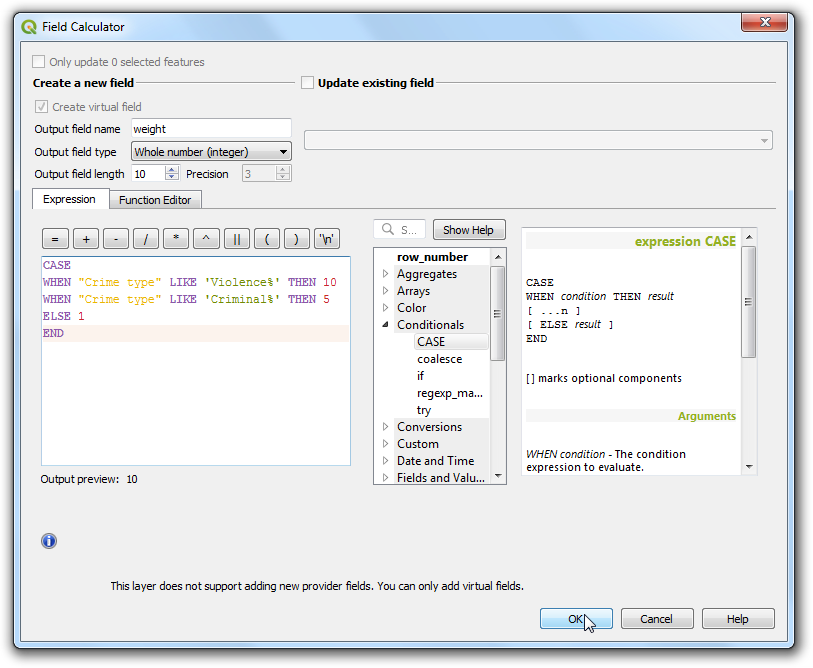

Ujaval Gandhi
Ujaval GandhiСоздание тепловых карт (QGIS3)¶
Тепловые карты - один из лучших способов визуализации плотных точечных данных. Тепловая карта (основанная на интерполяции) полезна при определении плотности расположения объектов. Чаще всего тепловые карты используются для отображения сведений о преступности, ДТП, плотности застройки и т. д.. В QGIS имеется генератор (renderer) тепловых карт и алгоритм обработки Heatmap (Kernel Density Estimation) , который позволяет создавать растровые изображения на базе точечного слоя.
Обзор задания¶
Мы будем работать с датасетом, содержащим места преступлений в Суррее (Великобритания): создадим тепловую карту. для определения районов с наибольшей плотностью преступлений.
Также Вы научитесь¶
Использовать виртуальные поля и условные выражения.
Получение данных¶
Ресурс data.police.uk предоставляет сведения об уличных преступлениях, их исходе и позволяет загружать данные в формате CSV. Загрузите информацию по Surrey Police и распакуйте архив для получения данных в формате CSV.
Вы можете напрямую скачать копию набора данных, пройдя по ссылке ниже:
Источник данных [POLICEUK]
Методика¶
Для начала загрузим слой карты-подложки OpenStreetMap, а после импортируем CSV. Во вкладке Browser найдите раздел XYZ Tiles.

Разверните его, чтобы найти слой тайлов OpenStreetMap. Перетащите этот слой в полотно карты. Далее загрузим файл CSV. Нажмите на кнопку Open Data Source Manager.

Перейдите во вкладку Delimited Text. Мы импортируем данные о преступлениях, которые хранятся в формате CSV. Рядом с File name щелкните по … и найдите загруженный файл
2019-02-surrey-street.csv. Поля X field и Y field в разделе Geometry Definition теперь содержат данные из столбцовLongitudeиLatitude. Параметр Geometry CRS следует оставить по умолчанию:EPSG:4326 - WGS 84. Панель Sample data содержит примеры данных, чтобы Вы удостоверились, что они считались корректно. Нажмите click Add и Close.

В панели QGIS Layers теперь появятся 2 слоя:
OpenStreetMapи2019-02-surrey-street. Щёлкните правой кнопкой мыши по слою2019-02-surrey-streetи выберите Zoom to Layer.

Теперь поверх слоя OpenStreetMap на карте отображается точечный слой с местами преступлений. Измените увеличение и охват, чтобы внимательно изучить данные. Точки расположены так плотно, что довольно трудно понять, где плотность преступлений выше. Именно для этого нам нужна тепловая карта. Выберите слой
2019-02-surrey-streetи нажмите Open the Layer Styling panel.

В стиле отрисовки слоя выберите
Heatmap. Панель Layer Styling panel - интерактивная, так что изменения сразу отобразятся в окне карты. Теперь слой будет по-умолчанию отображаться в градациях серого.

Обычно для тепловых карт используют оранжево-красную или бело-красную палитры: чем выше плотность точек, тем больше тепла. Щелкните по выпадающему меню Color ramp и выберите цветовой ряд
Reds.

Теперь нужно указать Radius. Этот параметр задает зону влияния каждой точки. Значение этого параметра будет зависеть от типа исходных данных. В нашем случае предположим, что каждое преступление влияет на зону радиусом 5 км вокруг себя. Заметим (см. правый нижний угол области просмотра), что система координат проекта
EPSG: 3857. Единицами измерения в этой системе координат являются метры, поэтому радиус зададим5000метров. Еще один, скрытый параметр - это Kernel shape. Это функция, определяющая влияние каждой точки за пределом выбранного радиуса. Рендерер тепловой карты использует функцию``Quartic``. Можно также указать другие типы функций для генерации тепловой карты:Triangular,Uniform,TriweightилиEpanechnikov. Подробнее см. этот пост.

Визуализация в стиле тепловой карты готова. Мы также можем отрегулировать прозрачность отрисовки Opacity в разделе Layer Rendering . Установите прозрачность на
60 %, чтобы под тепловой картой была видна подложка.

В большом количестве случаев плотности точек для анализа будет достаточно. Но порой важна каждая точка сама по себе. Например, насильственные преступления должны при анализе иметь больший вес, чем кражи. Одновременно, к одной и той же точке может относиться несколько преступлений, и это тоже надо учитывать. Для учета подобных факторов можно создать отдельное поле с весом для каждой точки. Добавим столбец с весами, чтобы подчеркнуть разное влияние точек на общую картину. Щёлкните правой кнопкой мыши``2019-02-surrey-street`` и выберите Open Attribute Table.

В исходных данных есть поле
Crime type. Используем его для того, чтобы разбить преступления на категории и присвоить больший вес насильственным преступлениям.

Щелкните Open field calculator.

Теперь введем формулу, задающую вес преступления в зависимости от
Crime type. В QGIS есть удобный способ добавлять поля, полученные в результате вычислений через Virtual Fields. Виртуальное поле сохраняется в проекте QGIS и не вносит изменений в исходные данные. Также оно считается динамически и с ним можно работать как с любым атрибутом. Укажитеweightв качестве Output field name и задайте значениеWhole number (integer)в Output field type. В редакторе Expression editor введите следующее выражение. Мы используем УСЛОВИЕ для определения зависимости значения веса от определенных условий. Нажмите Click OK.
CASE WHEN "Crime type" LIKE 'Violence%' THEN 10 WHEN "Crime type" LIKE 'Criminal%' THEN 5 ELSE 1 END
Каждому объекту будет присвоен новый атрибут, соответствующий его весу.

Вернитесь в панель Layer Styling, щелкните по выпадающему меню Weight points by и выберите только что созданное поле
weight.

Теперь стиль отображения тепловой карты изменился в соответствии с весом точки. Закройте панель Layer Styling.

Если Вам требуется сохранить тепловую карту как постоянный растровый слой или поменять оформление карты (например, алгоритм отрисовки или радиус), можно воспользоваться инструментом Heatmap (Kernel Density Estimation) в Панели Инструментов (Processing Toolbox). Сейчас мы опробуем его. Перейдите к разделу: Processing –> Toolbox.

Перед созданием тепловой карты, нужно перепроецировать данные в плоскую систему координат. Поскольку в вычислениях участвуют расстояния, не вполне корректно использовать географическую систему координат (с широтой и долготой). В поиске найдите алгоритм .

Нажмите Select CRS в диалоговом окне Reproject layer для выбора Target CRS. Отыщите
EPSG:27700 OSGB 1936 / British National Grid. Это система координат хорошо подходит для Великобритании. Нажмите Run.

В панели Layers появится новый слой
Reprojected. Чтобы скрыть старый слой2019-02-surrey-street, снимите галочку напротив него.

Теперь найдите алгоритм .

В диалоговом окне Heatmap (Kernel Density Estimation) укажем те же параметры, что и раньше. В поле Radius укажите
5000метров, а в поле Weight from field -weight. Также задайте Pixel size X и Pixel size Y равными50метрам. Оставьте значение Kernel shape по умолчанию (Quartic). Нажмите Run.

Примечание
Параметр Radius from field позволяет динамически задавать радиус поиска для каждой точки. Этот параметр можно использовать вместе с Weight from field для контроля за распространением влияния каждой точки.
Когда обработка завершится, в проект будет загружен новый растровый слой
OUTPUT. Стиль оформления по умолчанию у него не очень презентабельный:Singleband gray. Нажмите Open the Layer Styling panel для изменения стиля слоя.

Поменяйте цветовой ряд на
Singleband Pseudocolorи выберите палитруReds. Теперь слой похож на тепловую карту, которую мы создавали в начале упражнения.

Примечание
Заметим, что у слоя OUTPUT` в панели Layers есть легенда, которой нет у старого слоя 2019-02-surrey-street. Довольно часто специалисты сталкиваются отсутствием легенды у тепловых карт. Она может потребоваться, например, при выводе на печать в Print Layout. Эта проблема решается созданием аналогичной растровой тепловой карты.
If you want to give feedback or share your experience with this tutorial, please comment below. (requires GitHub account)